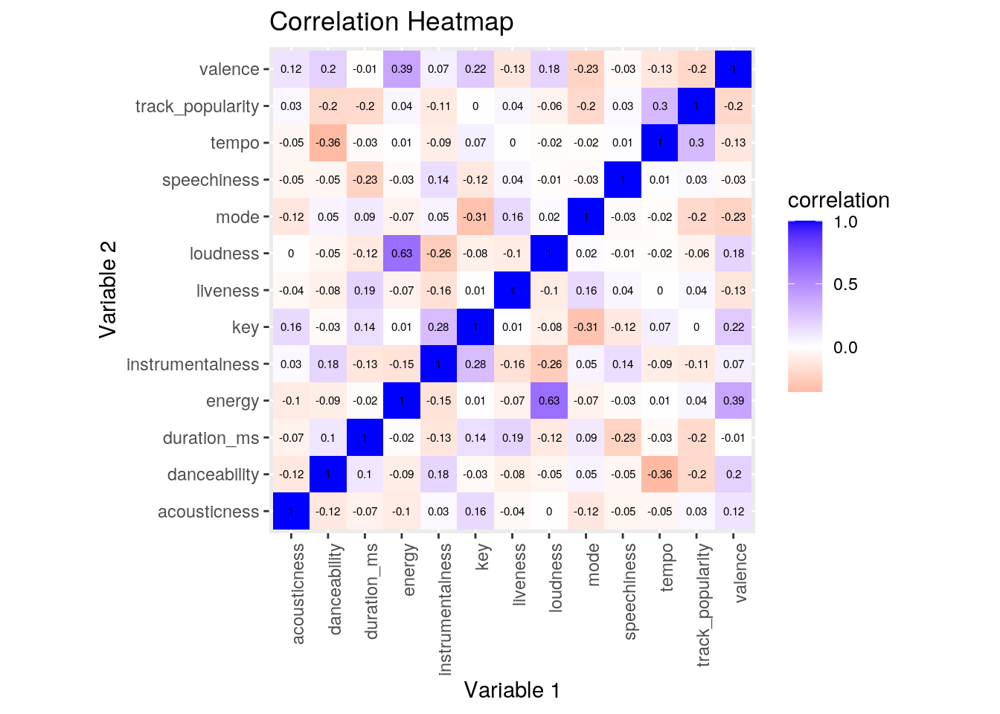
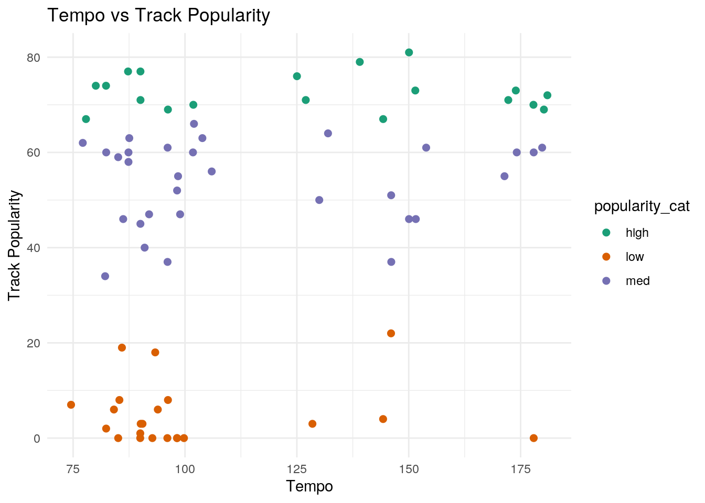
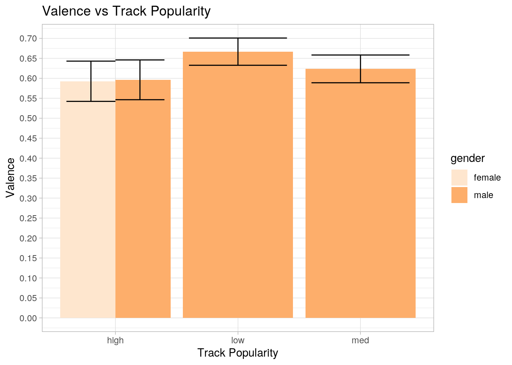
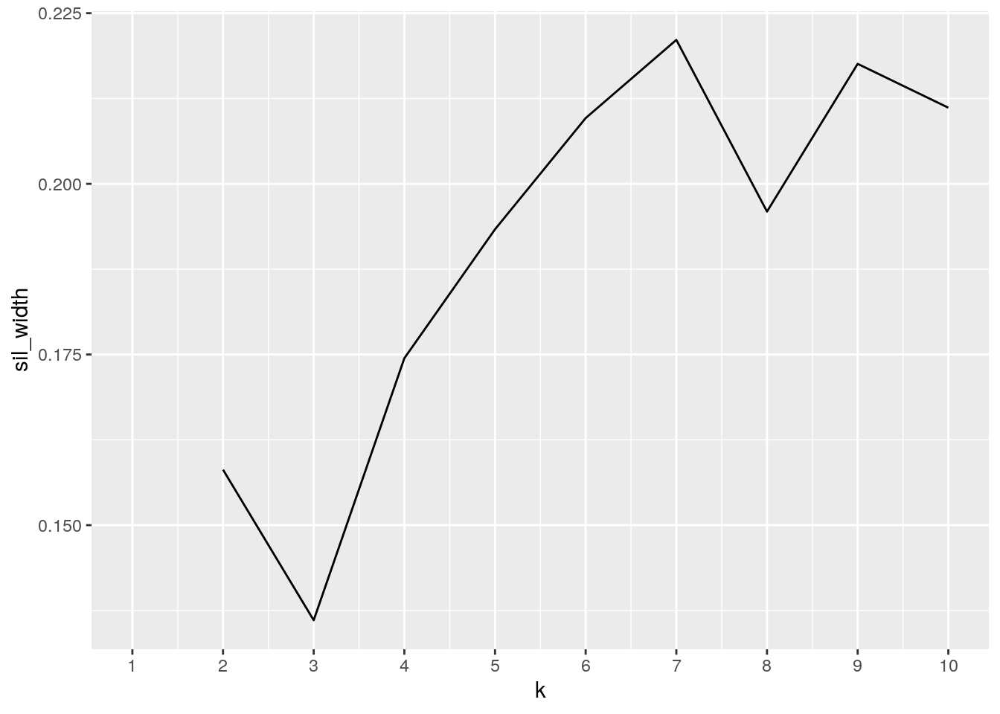
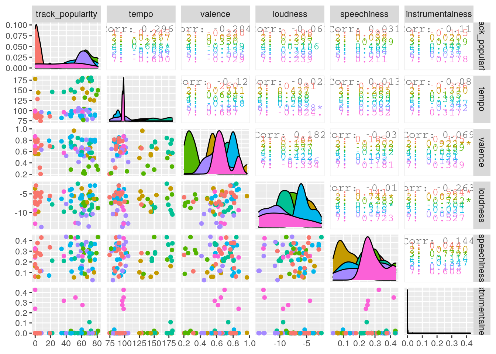
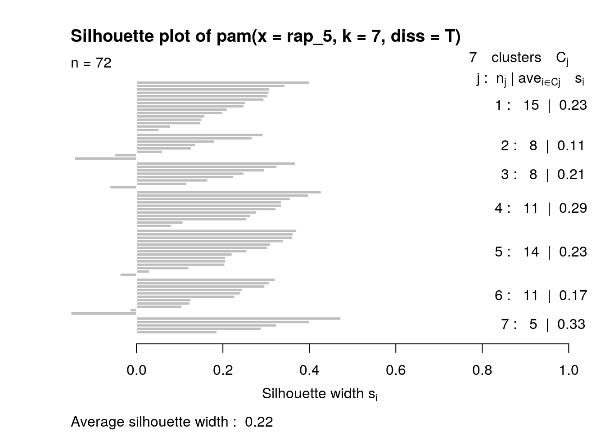

December 2, 2020
Inroduction
The two datasets I have chosen involve taking a deeper look into the music industry. The first dataset, spotify_songs, is a dataset that contains information from an experiment conducted by, Kaylin Pavlik. She used the spotifyr package to collect about 5000 songs from 5 main categories (EDM, Latin, Pop, R&B, Rap, & Rock). The dataset contains variables such as the artist name, track name/album name, genre, song popularity, and 12 quantitative audio features for each track. The second dataset, polls, is a dataset that contains information from an experiment conducted by, Simon Jockers at Datawrapper. The dataset was collected through BBC Music, who asked more than 100 critics, artist, and other music industry folks from 15 countries for their favorite hip-hop tracks. The dataset contains variables such as the track title, track artist, gender, track ranking, and the critics information.
When choosing my datasets, I immediately knew I wanted to choose something music related. Music has been a persistent component of my everyday life as I wake up and put on my favorite jams while I get ready for the day I have ahead of me. I decided to specifically look into the genre of hip-hop/rap as it is a genre that I am not very familiar with and would love to gain an appreciation for. From the two datasets, I plan to analyze how audio features play a role into the overall ranking of the different tracks. One potential association that I expect is that tracks that rank higher in popularity will have high values for audio features such as loudness and speechiness while having lower values for audio features such as tempo, valence, and instrumentalness. I believe we would see these associations as most rap tracks are characterized by a slower, relaxed rhythmic style that contain rhythmic speech. I believe the more a track embodies the typically characteristics associated with the rap genre, the more likely it is to attract to audiences that enjoy this genre of music.
 (width=200)
(width=200)
Loading in the Data
I loaded up the two datasets and named them as spotify_songs and polls into R using the following code below. After loading in the datasets, I took a look at the datasets in order to determine if they required tidying. Every observation had its own row and every variable had its own column, determining that both datasets were tidy.
spotify_songs <- readr::read_csv("https://raw.githubusercontent.com/rfordatascience/tidytuesday/master/data/2020/2020-01-21/spotify_songs.csv")
polls <- readr::read_csv("https://raw.githubusercontent.com/rfordatascience/tidytuesday/master/data/2020/2020-04-14/polls.csv")library(tidyverse)
glimpse(spotify_songs)## Rows: 32,833
## Columns: 23
## $ track_id <chr> "6f807x0ima9a1j3VPbc7VN", "0r7CVbZTWZgbTCYdf…
## $ track_name <chr> "I Don't Care (with Justin Bieber) - Loud Lu…
## $ track_artist <chr> "Ed Sheeran", "Maroon 5", "Zara Larsson", "T…
## $ track_popularity <dbl> 66, 67, 70, 60, 69, 67, 62, 69, 68, 67, 58, …
## $ track_album_id <chr> "2oCs0DGTsRO98Gh5ZSl2Cx", "63rPSO264uRjW1X5E…
## $ track_album_name <chr> "I Don't Care (with Justin Bieber) [Loud Lux…
## $ track_album_release_date <chr> "2019-06-14", "2019-12-13", "2019-07-05", "2…
## $ playlist_name <chr> "Pop Remix", "Pop Remix", "Pop Remix", "Pop …
## $ playlist_id <chr> "37i9dQZF1DXcZDD7cfEKhW", "37i9dQZF1DXcZDD7c…
## $ playlist_genre <chr> "pop", "pop", "pop", "pop", "pop", "pop", "p…
## $ playlist_subgenre <chr> "dance pop", "dance pop", "dance pop", "danc…
## $ danceability <dbl> 0.748, 0.726, 0.675, 0.718, 0.650, 0.675, 0.…
## $ energy <dbl> 0.916, 0.815, 0.931, 0.930, 0.833, 0.919, 0.…
## $ key <dbl> 6, 11, 1, 7, 1, 8, 5, 4, 8, 2, 6, 8, 1, 5, 5…
## $ loudness <dbl> -2.634, -4.969, -3.432, -3.778, -4.672, -5.3…
## $ mode <dbl> 1, 1, 0, 1, 1, 1, 0, 0, 1, 1, 1, 1, 1, 0, 0,…
## $ speechiness <dbl> 0.0583, 0.0373, 0.0742, 0.1020, 0.0359, 0.12…
## $ acousticness <dbl> 0.10200, 0.07240, 0.07940, 0.02870, 0.08030,…
## $ instrumentalness <dbl> 0.00e+00, 4.21e-03, 2.33e-05, 9.43e-06, 0.00…
## $ liveness <dbl> 0.0653, 0.3570, 0.1100, 0.2040, 0.0833, 0.14…
## $ valence <dbl> 0.518, 0.693, 0.613, 0.277, 0.725, 0.585, 0.…
## $ tempo <dbl> 122.036, 99.972, 124.008, 121.956, 123.976, …
## $ duration_ms <dbl> 194754, 162600, 176616, 169093, 189052, 1630…glimpse(polls)## Rows: 535
## Columns: 9
## $ rank <dbl> 1, 2, 3, 4, 5, 1, 2, 3, 4, 5, 1, 2, 3, 4, 5, 1, 2, 3,…
## $ title <chr> "Terminator X To The Edge of Panic", "4th Chamber", "…
## $ artist <chr> "Public Enemy", "Gza ft. Ghostface Killah & Killah Pr…
## $ gender <chr> "male", "male", "male", "male", "male", "male", "mixe…
## $ year <dbl> 1998, 1995, 1986, 2001, 1994, 1997, 1989, 1986, 1996,…
## $ critic_name <chr> "Joseph Abajian", "Joseph Abajian", "Joseph Abajian",…
## $ critic_rols <chr> "Fat Beats", "Fat Beats", "Fat Beats", "Fat Beats", "…
## $ critic_country <chr> "US", "US", "US", "US", "US", "US", "US", "US", "US",…
## $ critic_country2 <chr> NA, NA, NA, NA, NA, NA, NA, NA, NA, NA, NA, NA, NA, N…Tidying Data
Since both of my datasets were tidy, in order to display the use of pivot_wider and pivot_longer functions I untidyed my data with pivot_wider and made them tidy again with pivot_longer.
spotify_songs %>% pivot_wider(names_from = "track_album_release_date",
values_from = "track_popularity")## # A tibble: 32,833 x 4,551
## track_id track_name track_artist track_album_id track_album_name
## <chr> <chr> <chr> <chr> <chr>
## 1 6f807x0… I Don't C… Ed Sheeran 2oCs0DGTsRO98… I Don't Care (w…
## 2 0r7CVbZ… Memories … Maroon 5 63rPSO264uRjW… Memories (Dillo…
## 3 1z1Hg7V… All the T… Zara Larsson 1HoSmj2eLcsrR… All the Time (D…
## 4 75Fpbth… Call You … The Chainsm… 1nqYsOef1yKKu… Call You Mine -…
## 5 1e8PAfc… Someone Y… Lewis Capal… 7m7vv9wlQ4i0L… Someone You Lov…
## 6 7fvUMiy… Beautiful… Ed Sheeran 2yiy9cd2QktrN… Beautiful Peopl…
## 7 2OAylPU… Never Rea… Katy Perry 7INHYSeusaFly… Never Really Ov…
## 8 6b1RNvA… Post Malo… Sam Feldt 6703SRPsLkS4b… Post Malone (fe…
## 9 7bF6tCO… Tough Lov… Avicii 7CvAfGvq4RlIw… Tough Love (Tië…
## 10 1IXGILk… If I Can'… Shawn Mendes 4QxzbfSsVryEQ… If I Can't Have…
## # … with 32,823 more rows, and 4,546 more variables: playlist_name <chr>,
## # playlist_id <chr>, playlist_genre <chr>, playlist_subgenre <chr>,
## # danceability <dbl>, energy <dbl>, key <dbl>, loudness <dbl>, mode <dbl>,
## # speechiness <dbl>, acousticness <dbl>, instrumentalness <dbl>,
## # liveness <dbl>, valence <dbl>, tempo <dbl>, duration_ms <dbl>,
## # `2019-06-14` <dbl>, `2019-12-13` <dbl>, `2019-07-05` <dbl>,
## # `2019-07-19` <dbl>, `2019-03-05` <dbl>, `2019-07-11` <dbl>,
## # `2019-07-26` <dbl>, `2019-08-29` <dbl>, `2019-06-20` <dbl>,
## # `2019-06-21` <dbl>, `2019-08-16` <dbl>, `2019-03-29` <dbl>,
## # `2019-05-17` <dbl>, `2019-07-12` <dbl>, `2019-12-11` <dbl>,
## # `2019-05-03` <dbl>, `2018-12-28` <dbl>, `2019-03-08` <dbl>,
## # `2019-10-18` <dbl>, `2019-08-23` <dbl>, `2019-05-08` <dbl>,
## # `2019-10-25` <dbl>, `2019-05-24` <dbl>, `2019-08-09` <dbl>,
## # `2019-02-01` <dbl>, `2019-05-23` <dbl>, `2019-04-19` <dbl>,
## # `2019-11-01` <dbl>, `2018-11-30` <dbl>, `2018-11-23` <dbl>,
## # `2019-09-05` <dbl>, `2019-11-22` <dbl>, `2018-07-25` <dbl>,
## # `2019-06-27` <dbl>, `2019-06-28` <dbl>, `2019-09-27` <dbl>,
## # `2019-01-25` <dbl>, `2019-11-12` <dbl>, `2019-04-29` <dbl>,
## # `2019-11-15` <dbl>, `2018-10-19` <dbl>, `2019-12-12` <dbl>,
## # `2019-12-27` <dbl>, `2019-09-12` <dbl>, `2018-09-28` <dbl>,
## # `2019-03-27` <dbl>, `2019-10-11` <dbl>, `2019-10-04` <dbl>,
## # `2019-09-13` <dbl>, `2018-02-09` <dbl>, `2019-05-31` <dbl>,
## # `2019-04-12` <dbl>, `2019-07-24` <dbl>, `2019-03-22` <dbl>,
## # `2018-10-18` <dbl>, `2018-03-16` <dbl>, `2019-03-01` <dbl>,
## # `2018-11-09` <dbl>, `2018-09-27` <dbl>, `2019-04-10` <dbl>,
## # `2018-01-23` <dbl>, `2019-10-24` <dbl>, `2019-05-13` <dbl>,
## # `2019-01-18` <dbl>, `2019-06-18` <dbl>, `2019-09-06` <dbl>,
## # `2018-08-31` <dbl>, `2017-03-02` <dbl>, `2019-02-21` <dbl>,
## # `2017-03-03` <dbl>, `2019-02-14` <dbl>, `2018-09-06` <dbl>,
## # `2018-01-25` <dbl>, `2018-12-07` <dbl>, `2019-02-27` <dbl>,
## # `2017-10-13` <dbl>, `2019-04-05` <dbl>, `2019-05-30` <dbl>,
## # `2019-08-02` <dbl>, `2017-02-23` <dbl>, `2016-07-29` <dbl>,
## # `2014-10-13` <dbl>, `2012-01-01` <dbl>, `2018-05-17` <dbl>, …spotify_songs %>% pivot_wider(names_from = "track_album_release_date",
values_from = "track_popularity") %>% pivot_longer(cols = -c(1:21),
names_to = "track_album_release_date", values_to = "track_popularity",
values_drop_na = T)## # A tibble: 32,833 x 23
## track_id track_name track_artist track_album_id track_album_name
## <chr> <chr> <chr> <chr> <chr>
## 1 6f807x0… I Don't C… Ed Sheeran 2oCs0DGTsRO98… I Don't Care (w…
## 2 0r7CVbZ… Memories … Maroon 5 63rPSO264uRjW… Memories (Dillo…
## 3 1z1Hg7V… All the T… Zara Larsson 1HoSmj2eLcsrR… All the Time (D…
## 4 75Fpbth… Call You … The Chainsm… 1nqYsOef1yKKu… Call You Mine -…
## 5 1e8PAfc… Someone Y… Lewis Capal… 7m7vv9wlQ4i0L… Someone You Lov…
## 6 7fvUMiy… Beautiful… Ed Sheeran 2yiy9cd2QktrN… Beautiful Peopl…
## 7 2OAylPU… Never Rea… Katy Perry 7INHYSeusaFly… Never Really Ov…
## 8 6b1RNvA… Post Malo… Sam Feldt 6703SRPsLkS4b… Post Malone (fe…
## 9 7bF6tCO… Tough Lov… Avicii 7CvAfGvq4RlIw… Tough Love (Tië…
## 10 1IXGILk… If I Can'… Shawn Mendes 4QxzbfSsVryEQ… If I Can't Have…
## # … with 32,823 more rows, and 18 more variables: playlist_name <chr>,
## # playlist_id <chr>, playlist_genre <chr>, playlist_subgenre <chr>,
## # danceability <dbl>, energy <dbl>, key <dbl>, loudness <dbl>, mode <dbl>,
## # speechiness <dbl>, acousticness <dbl>, instrumentalness <dbl>,
## # liveness <dbl>, valence <dbl>, tempo <dbl>, duration_ms <dbl>,
## # track_album_release_date <chr>, track_popularity <dbl>polls %>% pivot_wider(names_from = "year", values_from = "rank")## # A tibble: 535 x 47
## title artist gender critic_name critic_rols critic_country critic_country2
## <chr> <chr> <chr> <chr> <chr> <chr> <chr>
## 1 Term… Publi… male Joseph Aba… Fat Beats US <NA>
## 2 4th … Gza f… male Joseph Aba… Fat Beats US <NA>
## 3 Pete… Run D… male Joseph Aba… Fat Beats US <NA>
## 4 Play… GLOBE… male Joseph Aba… Fat Beats US <NA>
## 5 Time… O.C. male Joseph Aba… Fat Beats US <NA>
## 6 Play… Slum … male Biba Adams Critic US <NA>
## 7 Self… Stop … mixed Biba Adams Critic US <NA>
## 8 Push… Salt-… female Biba Adams Critic US <NA>
## 9 Ambi… 2Pac male Biba Adams Critic US <NA>
## 10 Big … JAY-Z… male Biba Adams Critic US <NA>
## # … with 525 more rows, and 40 more variables: `1998` <dbl>, `1995` <dbl>,
## # `1986` <dbl>, `2001` <dbl>, `1994` <dbl>, `1997` <dbl>, `1989` <dbl>,
## # `1996` <dbl>, `1999` <dbl>, `1979` <dbl>, `1984` <dbl>, `1988` <dbl>,
## # `1982` <dbl>, `1992` <dbl>, `2003` <dbl>, `2012` <dbl>, `2002` <dbl>,
## # `2004` <dbl>, `1993` <dbl>, `2010` <dbl>, `2013` <dbl>, `2011` <dbl>,
## # `2006` <dbl>, `2000` <dbl>, `2007` <dbl>, `2015` <dbl>, `2014` <dbl>,
## # `1987` <dbl>, `1991` <dbl>, `1983` <dbl>, `2016` <dbl>, `2017` <dbl>,
## # `2019` <dbl>, `2008` <dbl>, `1990` <dbl>, `2005` <dbl>, `1985` <dbl>,
## # `2018` <dbl>, `1980` <dbl>, `2009` <dbl>polls %>% pivot_wider(names_from = "year", values_from = "rank") %>%
pivot_longer(cols = -c(1:7), names_to = "year", values_to = "rank",
values_drop_na = T)## # A tibble: 535 x 9
## title artist gender critic_name critic_rols critic_country critic_country2
## <chr> <chr> <chr> <chr> <chr> <chr> <chr>
## 1 Term… Publi… male Joseph Aba… Fat Beats US <NA>
## 2 4th … Gza f… male Joseph Aba… Fat Beats US <NA>
## 3 Pete… Run D… male Joseph Aba… Fat Beats US <NA>
## 4 Play… GLOBE… male Joseph Aba… Fat Beats US <NA>
## 5 Time… O.C. male Joseph Aba… Fat Beats US <NA>
## 6 Play… Slum … male Biba Adams Critic US <NA>
## 7 Self… Stop … mixed Biba Adams Critic US <NA>
## 8 Push… Salt-… female Biba Adams Critic US <NA>
## 9 Ambi… 2Pac male Biba Adams Critic US <NA>
## 10 Big … JAY-Z… male Biba Adams Critic US <NA>
## # … with 525 more rows, and 2 more variables: year <chr>, rank <dbl>Joining/Merging
After viewing the two datasets independently and verifying that they were tidy, I joined them together to form a single dataset. The two datasets were joined using inner_join based on their common ID variable of track name. I chose to use an inner join to combine these datasets as I wanted to drop all rows from each dataset that did not have a match according to their ID variable.
In the original dataset for spotify_songs, there was 32,833 observations and in the original dataset for polls, there was 535 observations. There are 32,578 observations in the spotify_songs dataset that are not in the polls dataset and there are 296 observations in the polls dataset that are not in the spotify_songs dataset. Therefore, when an inner join is performed, a total of 32,874 observations will be lost since these observations do not have a match according to their ID variable.
rap <- inner_join(spotify_songs, polls, by = c(track_name = "title",
track_artist = "artist"))
anti_join(spotify_songs, polls, by = c(track_name = "title"))## # A tibble: 32,578 x 23
## track_id track_name track_artist track_popularity track_album_id
## <chr> <chr> <chr> <dbl> <chr>
## 1 6f807x0… I Don't C… Ed Sheeran 66 2oCs0DGTsRO98…
## 2 0r7CVbZ… Memories … Maroon 5 67 63rPSO264uRjW…
## 3 1z1Hg7V… All the T… Zara Larsson 70 1HoSmj2eLcsrR…
## 4 75Fpbth… Call You … The Chainsm… 60 1nqYsOef1yKKu…
## 5 1e8PAfc… Someone Y… Lewis Capal… 69 7m7vv9wlQ4i0L…
## 6 7fvUMiy… Beautiful… Ed Sheeran 67 2yiy9cd2QktrN…
## 7 2OAylPU… Never Rea… Katy Perry 62 7INHYSeusaFly…
## 8 6b1RNvA… Post Malo… Sam Feldt 69 6703SRPsLkS4b…
## 9 7bF6tCO… Tough Lov… Avicii 68 7CvAfGvq4RlIw…
## 10 1IXGILk… If I Can'… Shawn Mendes 67 4QxzbfSsVryEQ…
## # … with 32,568 more rows, and 18 more variables: track_album_name <chr>,
## # track_album_release_date <chr>, playlist_name <chr>, playlist_id <chr>,
## # playlist_genre <chr>, playlist_subgenre <chr>, danceability <dbl>,
## # energy <dbl>, key <dbl>, loudness <dbl>, mode <dbl>, speechiness <dbl>,
## # acousticness <dbl>, instrumentalness <dbl>, liveness <dbl>, valence <dbl>,
## # tempo <dbl>, duration_ms <dbl>anti_join(polls, spotify_songs, by = c(title = "track_name"))## # A tibble: 296 x 9
## rank title artist gender year critic_name critic_rols critic_country
## <dbl> <chr> <chr> <chr> <dbl> <chr> <chr> <chr>
## 1 1 Term… Publi… male 1998 Joseph Aba… Fat Beats US
## 2 3 Pete… Run D… male 1986 Joseph Aba… Fat Beats US
## 3 4 Play… GLOBE… male 2001 Joseph Aba… Fat Beats US
## 4 5 Time… O.C. male 1994 Joseph Aba… Fat Beats US
## 5 2 Self… Stop … mixed 1989 Biba Adams Critic US
## 6 5 Big … JAY-Z… male 1999 Biba Adams Critic US
## 7 1 Rapp… Sugar… male 1979 Dart Adams Critic US
## 8 2 Suck… Run D… male 1984 Dart Adams Critic US
## 9 3 Lyri… Eric … male 1988 Dart Adams Critic US
## 10 2 Nuth… Dr Dr… male 1992 Insanul Ah… Genius US
## # … with 286 more rows, and 1 more variable: critic_country2 <chr>32578 + 296 #total number of observations lost## [1] 32874Wrangling
The first thing I did to make my data a lot easier to work with was to remove columns that were not necessary for my analysis through the select function. After selecting, I used the distinct function to remove any duplicate rows.
rap_2 <- rap %>% separate(track_album_release_date, into = c("year",
"month", "day")) %>% select(-month, -day, -critic_country2,
-track_album_id, -playlist_name, -playlist_id, -playlist_genre,
-playlist_subgenre, -critic_name, -critic_rols, -critic_country,
-track_id, -rank) %>% distinct()After selecting for the columns of interest and getting rid of any duplicate rows, I used the mutate function to create a new categorical variable out of the track_popularity variable. The track popularity variable ranges from 0-100 so I made 3 distinct categories: high, med, and low.
rap_3 <- rap_2 %>% mutate(popularity_cat = case_when(track_popularity >
66.6 ~ "high", track_popularity <= 66.6 & 33.3 <= track_popularity ~
"med", track_popularity < 33.3 ~ "low"))Below, I computed several summary statistics for the numeric variables: speechiness, tempo, valence, instrumentalness, loudness, and track popularity. I chose these variables to analyze as I believe that these quantitative audio variables are associated with the overall popularity of a track.
rap_3 %>% summarize(n())## # A tibble: 1 x 1
## `n()`
## <int>
## 1 72rap_3 %>% summarize_at(c("speechiness", "tempo", "valence", "instrumentalness",
"loudness", "track_popularity"), n_distinct, na.rm = T)## # A tibble: 1 x 6
## speechiness tempo valence instrumentalness loudness track_popularity
## <int> <int> <int> <int> <int> <int>
## 1 63 68 64 33 68 41rap_3 %>% summarize_at(c("speechiness", "tempo", "valence", "instrumentalness",
"loudness", "track_popularity"), mean, na.rm = T)## # A tibble: 1 x 6
## speechiness tempo valence instrumentalness loudness track_popularity
## <dbl> <dbl> <dbl> <dbl> <dbl> <dbl>
## 1 0.250 114. 0.629 0.0254 -7.38 43.8rap_3 %>% summarize_at(c("speechiness", "tempo", "valence", "instrumentalness",
"loudness", "track_popularity"), median, na.rm = T)## # A tibble: 1 x 6
## speechiness tempo valence instrumentalness loudness track_popularity
## <dbl> <dbl> <dbl> <dbl> <dbl> <dbl>
## 1 0.26 98.2 0.652 0.00000084 -7.16 55rap_3 %>% summarize_at(c("speechiness", "tempo", "valence", "instrumentalness",
"loudness", "track_popularity"), sd, na.rm = T)## # A tibble: 1 x 6
## speechiness tempo valence instrumentalness loudness track_popularity
## <dbl> <dbl> <dbl> <dbl> <dbl> <dbl>
## 1 0.111 33.6 0.177 0.0844 2.80 28.0rap_3 %>% summarize_at(c("speechiness", "tempo", "valence", "instrumentalness",
"loudness", "track_popularity"), var, na.rm = T)## # A tibble: 1 x 6
## speechiness tempo valence instrumentalness loudness track_popularity
## <dbl> <dbl> <dbl> <dbl> <dbl> <dbl>
## 1 0.0124 1128. 0.0312 0.00713 7.82 783.rap_3 %>% summarize_at(c("speechiness", "tempo", "valence", "instrumentalness",
"loudness", "track_popularity"), min, na.rm = T)## # A tibble: 1 x 6
## speechiness tempo valence instrumentalness loudness track_popularity
## <dbl> <dbl> <dbl> <dbl> <dbl> <dbl>
## 1 0.0313 74.5 0.203 0 -13.9 0rap_3 %>% summarize_at(c("speechiness", "tempo", "valence", "instrumentalness",
"loudness", "track_popularity"), max, na.rm = T)## # A tibble: 1 x 6
## speechiness tempo valence instrumentalness loudness track_popularity
## <dbl> <dbl> <dbl> <dbl> <dbl> <dbl>
## 1 0.434 181. 0.968 0.426 -2.26 81rap_3 %>% filter(popularity_cat == "high") %>% summarize_at(c("speechiness",
"tempo", "valence", "instrumentalness", "loudness", "track_popularity"),
mean, na.rm = T)## # A tibble: 1 x 6
## speechiness tempo valence instrumentalness loudness track_popularity
## <dbl> <dbl> <dbl> <dbl> <dbl> <dbl>
## 1 0.246 128. 0.595 0.00825 -7.14 72.7rap_3 %>% filter(popularity_cat == "low") %>% summarize_at(c("speechiness",
"tempo", "valence", "instrumentalness", "loudness", "track_popularity"),
mean, na.rm = T)## # A tibble: 1 x 6
## speechiness tempo valence instrumentalness loudness track_popularity
## <dbl> <dbl> <dbl> <dbl> <dbl> <dbl>
## 1 0.237 101. 0.667 0.0303 -7.10 5After analyzing the general summary statistics for the quantitative audio variables, I decided to create a few summary statistics after grouping by the new mutated variable, popularity category (high, med, low).
rap_3 %>% group_by(popularity_cat) %>% summarize_at(c("speechiness",
"tempo", "valence", "instrumentalness", "loudness", "track_popularity"),
mean, na.rm = T) %>% arrange(track_popularity) %>% select(track_popularity,
everything())## # A tibble: 3 x 7
## track_popularity popularity_cat speechiness tempo valence instrumentalness
## <dbl> <chr> <dbl> <dbl> <dbl> <dbl>
## 1 5 low 0.237 101. 0.667 0.0303
## 2 53.6 med 0.262 115. 0.624 0.0325
## 3 72.7 high 0.246 128. 0.595 0.00825
## # … with 1 more variable: loudness <dbl>rap_3 %>% group_by(popularity_cat) %>% summarize_at(c("speechiness",
"tempo", "valence", "instrumentalness", "loudness", "track_popularity"),
min, na.rm = T) %>% arrange(track_popularity) %>% select(track_popularity,
everything())## # A tibble: 3 x 7
## track_popularity popularity_cat speechiness tempo valence instrumentalness
## <dbl> <chr> <dbl> <dbl> <dbl> <dbl>
## 1 0 low 0.0618 74.5 0.203 0
## 2 34 med 0.0562 77.2 0.211 0
## 3 67 high 0.0313 77.9 0.281 0
## # … with 1 more variable: loudness <dbl>rap_3 %>% group_by(popularity_cat) %>% summarize_at(c("speechiness",
"tempo", "valence", "instrumentalness", "loudness", "track_popularity"),
max, na.rm = T) %>% arrange(track_popularity) %>% select(track_popularity,
everything())## # A tibble: 3 x 7
## track_popularity popularity_cat speechiness tempo valence instrumentalness
## <dbl> <chr> <dbl> <dbl> <dbl> <dbl>
## 1 22 low 0.427 178. 0.867 0.426
## 2 66 med 0.434 180. 0.968 0.35
## 3 81 high 0.431 181. 0.805 0.108
## # … with 1 more variable: loudness <dbl>Lastly, I created a correlation matrix with all numeric variables contained in the dataset.
rap_3 %>% na.omit %>% select_if(is.numeric) %>% cor## track_popularity danceability energy key
## track_popularity 1.000000000 -0.19674872 0.036702792 0.003991072
## danceability -0.196748722 1.00000000 -0.089789296 -0.028660815
## energy 0.036702792 -0.08978930 1.000000000 0.006961492
## key 0.003991072 -0.02866082 0.006961492 1.000000000
## loudness -0.061089137 -0.05429678 0.626985126 -0.080853804
## mode -0.196874588 0.05012017 -0.066414645 -0.311581287
## speechiness 0.031089105 -0.04696134 -0.027551718 -0.122051291
## loudness mode speechiness acousticness
## track_popularity -0.061089137 -0.19687459 0.03108911 0.033799937
## danceability -0.054296784 0.05012017 -0.04696134 -0.119925120
## energy 0.626985126 -0.06641465 -0.02755172 -0.103950831
## key -0.080853804 -0.31158129 -0.12205129 0.159763043
## loudness 1.000000000 0.01553754 -0.01439783 0.002843521
## mode 0.015537544 1.00000000 -0.03163295 -0.123886428
## speechiness -0.014397827 -0.03163295 1.00000000 -0.053919760
## instrumentalness liveness valence tempo
## track_popularity -0.11092660 0.039812644 -0.203789894 0.296128844
## danceability 0.18028086 -0.079569192 0.196975910 -0.357519106
## energy -0.14967900 -0.066370601 0.386363215 0.006688359
## key 0.28121036 0.008588917 0.224068134 0.065876805
## loudness -0.26326261 -0.101108053 0.181637354 -0.023236958
## mode 0.05164158 0.162318894 -0.226604106 -0.017206652
## speechiness 0.14439399 0.037881988 -0.030097471 0.013254575
## duration_ms
## track_popularity -0.195087278
## danceability 0.104209194
## energy -0.018475112
## key 0.138605449
## loudness -0.115923467
## mode 0.092293552
## speechiness -0.227289387
## [ reached getOption("max.print") -- omitted 6 rows ]From the summary statistics performed I was able to explore my polished dataset and analyze the quantitative audio variables of interest possible associations with the track popularity. In my final dataset, there was a total of 72 observations, with 63, 68, 64, 33, 68, and 41 distinct observations for the variables speechiness, tempo, valence, instrumentalness, loudness, and track_popularity respectively. The mean, median, standard deviation, variance, min values, and max values were analyzed for each variable in order to get a general idea of what is going on with the whole dataset. In order to see the possible associations of these variables with the popularity of the track, I analyzed the mean values for the high and low categories of track popularity. From this, I was able to see that for the variables speechiness and loudness, their mean values were similar between both low and high popularity categories. On the other hand, the variables tempo, valence, and instrumentalness had mean values that varied from each other between the low and high popularity categories.
After analyzing the general summary statistics for the quantitative audio variables, I analyzed summary statistics for the same quantitative audio variables after grouping by the popularity categorical variable. Through this analysis, I was able to notice a similar pattern between the audio variables. For the variables speechiness and loudness, the mean was realtively similar between the three groups. On the other hand, for the variables tempo, valence, and instrumentalness there was relatively more variation between the three groups. Observations in the high popularity group had higher values for tempo while having lower values for valence and instrumentalness. The min and max values were also analyzed in order to understand the range within each variable for each group. Lastly, a correlation map was created in order to analyze the potential associations between the audio variables and track popularity. From this correlation map, the highest correlation is seen between track popularity and tempo while the lowest correlation is seen between loudness and track popularity.
Visualizing
I created a correlation heatmap of my numeric variables.
rap_cormat <- rap_3 %>% na.omit %>% select_if(is.numeric) %>%
cor
rap_cormat %>% as.data.frame() %>% rownames_to_column("var1") %>%
pivot_longer(-1, names_to = "var2", values_to = "correlation")## # A tibble: 169 x 3
## var1 var2 correlation
## <chr> <chr> <dbl>
## 1 track_popularity track_popularity 1
## 2 track_popularity danceability -0.197
## 3 track_popularity energy 0.0367
## 4 track_popularity key 0.00399
## 5 track_popularity loudness -0.0611
## 6 track_popularity mode -0.197
## 7 track_popularity speechiness 0.0311
## 8 track_popularity acousticness 0.0338
## 9 track_popularity instrumentalness -0.111
## 10 track_popularity liveness 0.0398
## # … with 159 more rowstidy_rap_cormat <- rap_cormat %>% as.data.frame() %>% rownames_to_column("var1") %>%
pivot_longer(-1, names_to = "var2", values_to = "correlation")
tidy_rap_cormat %>% ggplot(aes(var1, var2, fill = correlation)) +
geom_tile() + scale_fill_gradient2(low = "red", mid = "white",
high = "blue") + geom_text(aes(label = round(correlation,
2)), color = "black", size = 2) + theme(axis.text.x = element_text(angle = 90,
hjust = 1)) + coord_fixed() + ggtitle("Correlation Heatmap") +
xlab("Variable 1") + ylab("Variable 2")
When analyzing the correlation heatmap, I focused on analyzing the correlations between track popularity and the different audio variables. The largest correlation value was found between track popularity and the audio variable tempo. I decided to create a scatterplot, plotting the tempo variable on the x-axis, the track popularity variable on the y-axis, and grouping the points by the popularity category.
After plotting the variables, I was able to determine that there was no strong correlation between tempo and track popularity. This was able to be determined as there is no strong pattern being displayed and the different points are rather more scattered with no particular patter. We can see that each group (high, med, low) have points that range from lower tempo values to higher tempo values and do not correlate with the popularity of the track. Even though this was the strongest correlation value found between track popularity and the different audio variables, the correlation value is not strong enough to be effective at influencing track popularity.
ggplot(rap_3, aes(x = tempo, y = track_popularity, color = popularity_cat)) +
geom_point(size = 2) + ggtitle("Tempo vs Track Popularity") +
xlab("Tempo") + ylab("Track Popularity") + theme_minimal() +
scale_color_brewer(palette = "Dark2")
Again, when analyzing the correlation heatmap, I focused on analyzing the correlations between track popularity and the different audio variables. The smallest correlation value was found between track popularity and the audio variable valence. I decided to create a bar graph, plotting the popularity category variable on the x-axis, the valence variable's means on the y-axis, and grouping the points by gender, in order to display and emphasize that there was no strong correlation between valence and track popularity.
After graphing the variables, it is evident that valence and track popularity do not have a strong correlation as each track popularity category averages are around the same value. Since I did not two significant categorial variables that I was analyzing, I decided to group by a categorical variable that I believed would be interesting to analyze outside of analyzing the association between audio variables and track popularity. When grouping by gender, I was very shocked to see that all female artist tracks fell into the high popularity category and did not fall in the medium or low categories. This leads me to think that there could possibly be a correlation between gender and track popularity that could be analyzed in future research.
ggplot(rap_3, aes(x = popularity_cat, fill = gender)) + geom_bar(aes(y = valence),
stat = "summary", fun = mean, position = "dodge") + geom_errorbar(aes(y = valence),
stat = "summary", width = 0.8, position = "dodge") + ggtitle("Valence vs Track Popularity") +
xlab("Track Popularity") + ylab("Valence") + scale_y_continuous(breaks = seq(0,
1, 0.05)) + scale_fill_brewer(palette = "Oranges") + theme_light()
Dimensionality Reduction
Due to my data having a very large amount of numeric variables, I decided to focus on the variables track_popularity, tempo, valence, loudness, speechiness, and instrumentalness, as they were my original variables of interest before any analysis were performed.
I first took my data set and scaled the variables in order for an accurate comparison between the variables. After scaling, I calculated the Euclidean distances and created a matrix for the resulting data. The number of clusters, k, was determined using the silhouette method. After determining to use 7 clusters, I successfully ran a PAM analysis and visualized the results.
When analyzing the clusters, the medoids (most central observations) for the 7 clusters were Hypnotize_6_1997, B.O.B._61_2000, Look At Me!_79_2017, A Milli_46_2008, Ha_47_1998,Elevators (Me & You)_59_1996, and Appeal_61_1994.The average values for each cluster were relatively higher for clusters 2-4, while clusters 5-7 had middle ranging values, and cluster 1 had the lower values.
After analyzing the clusters, the silhouette width was calculated in order to determine how good of a solution was attained. The average silhouette width was equal to be 0.22. From the predetermined cutoffs, the average silhouette width of 0.22 signifies that there was no substantial structure found.
rap_4 <- rap_3 %>% unite(track_name, track_popularity, year,
col = "unique", remove = F) %>% distinct() #creatiing a distinct unique variable
rap_5 <- rap_4 %>% mutate_if(is.numeric, scale) %>% column_to_rownames("unique") %>%
select(track_popularity, tempo, valence, loudness, speechiness,
instrumentalness) %>% na.omit %>% dist %>% as.matrix
library(cluster)
sil_width <- vector()
for (i in 2:10) {
pam_fit <- pam(rap_5, diss = TRUE, k = i)
sil_width[i] <- pam_fit$silinfo$avg.width
}
ggplot() + geom_line(aes(x = 1:10, y = sil_width)) + scale_x_continuous(name = "k",
breaks = 1:10)
pam_rap2 <- pam(rap_5, k = 7, diss = T)
final_rap2 <- rap_4 %>% select(track_popularity, tempo, valence,
loudness, speechiness, instrumentalness) %>% mutate(cluster = as.factor(pam_rap2$clustering))
library(GGally)
ggpairs(final_rap2, columns = 1:6, aes(color = cluster))
pam_rap2$silinfo$avg.width## [1] 0.2210879plot(pam_rap2, which = 2)
final_rap2 %>% rename(popularity = track_popularity) %>% group_by(cluster) %>%
summarize_if(is.numeric, .funs = list(mean = mean, median = median,
sd = sd), na.rm = T) %>% pivot_longer(contains("_")) %>%
separate(name, sep = "_", into = c("variable", "stat")) %>%
pivot_wider(names_from = "variable", values_from = "value") %>%
arrange(stat)## # A tibble: 21 x 8
## cluster stat popularity tempo valence loudness speechiness instrumentalness
## <fct> <chr> <dbl> <dbl> <dbl> <dbl> <dbl> <dbl>
## 1 1 mean 3.87 91.3 0.659 -6.14 0.268 0.0000813
## 2 2 mean 48.6 148. 0.623 -5.72 0.114 0.000312
## 3 3 mean 66.9 138. 0.302 -7.27 0.297 0.00601
## 4 4 mean 56.4 164. 0.703 -8.45 0.291 0.0123
## 5 5 mean 56 89.4 0.738 -5.26 0.227 0.00249
## 6 6 mean 56.1 92.9 0.595 -11.0 0.257 0.0000693
## 7 7 mean 30 97.4 0.681 -9.61 0.299 0.322
## 8 1 median 3 90.0 0.694 -5.84 0.282 0
## 9 2 median 60.5 144. 0.56 -5.45 0.100 0.00000689
## 10 3 median 66.5 145. 0.281 -7.33 0.297 0.0000372
## # … with 11 more rows